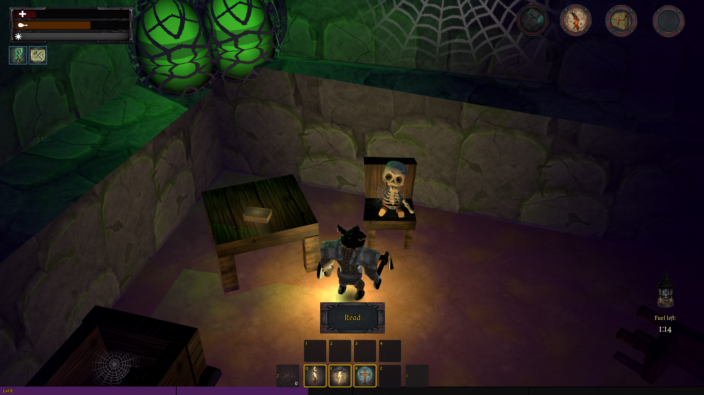
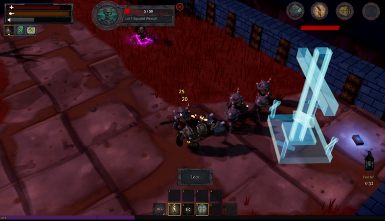
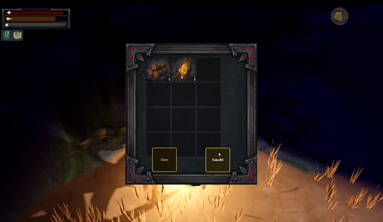
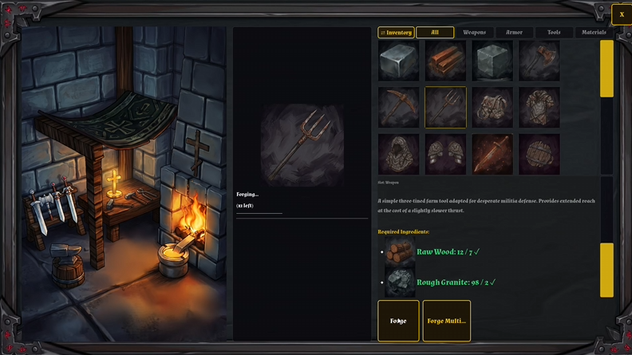
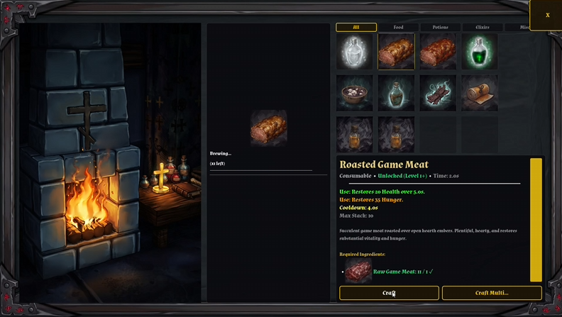

Core Fantasy
Dungeon Crawling
Ancient crypts reward the bold — and punish the unprepared.
Delve for gear, oil, and loot while the dark presses in. Your lantern is the key: keep it lit and fueled to hold the darkness at bay, move with confidence, and push deeper. Let the flame die, and the crypt turns against you.
- Light and fuel matter as much as steel
- High-risk loot runs between siege nights
- Crypts, mines, and forgotten places to purge

Tower Defense
Village Defense
The Village Cross is the heart of the settlement. If it falls, so do you.
Between expeditions, reinforce walls, place defenses, and stand the line when the horde marches. Siege nights turn preparation into survival — every plank and blade you earned in the wild pays off at the gates.
- Fortify chokepoints and palisades
- Hold the Cross through waves of attackers
- Your village is the hub between every risk

Campaign Rhythm
Seven-Day Cycle
Each week is a clock. Daylight for work. Night for reckoning.
Plan your days around gathering, crafting, cooking, and dungeon runs — then face the pressure as the week closes and the siege intensifies. Survive the cycle, reset the board, and push harder into the next week.
- A readable weekly loop of prep and payoff
- Rising threat that rewards smart planning
- Every day spent poorly is felt at the walls

Survival Loop
Gathering Resources
The wilds feed the village — wood, stone, herbs, and salvage.
Scavenge the overworld between crises. What you haul back becomes walls, weapons, oil, and meals. Gathering is not busywork; it is the quiet half of every siege you will later win.
- Forage and harvest across the region
- Stockpile for craft benches and defenses
- Risk routes that pay for the next night

Progression
Crafting
Turn salvage into steel at the workbench and forge.
Craft weapons, armor, tools, and lantern oil. Upgrade your loadout so the next crypt — and the next siege — does not end the same way. Stations in the village turn raw materials into lasting power.
- Blacksmith and crafting stations
- Gear and utility items from recipes
- Fuel and tools that enable deeper runs

Sustenance
Cooking
A full belly is a quiet advantage before the horns sound.
Cook rations at the station or hearth. Meals keep you in the fight through long dungeon delves and brutal defense nights — another layer of prep that separates survivors from corpses at the Cross.
- Turn ingredients into lasting buffs and recovery
- Prep food as part of the weekly plan
- Survive longer in crypt and courtyard alike
The week begins again
Wishlist Red Toll on Steam when it launches — dark fantasy survival, low-poly grit, and a village that must not fall.